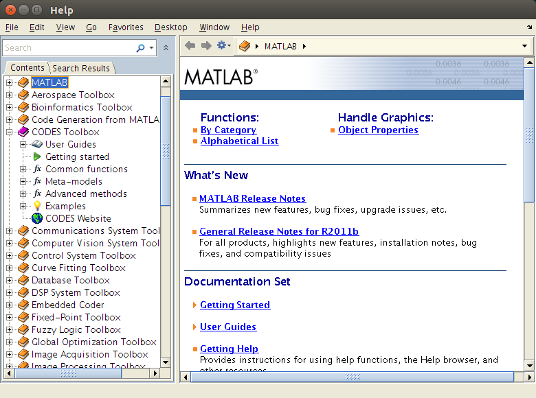
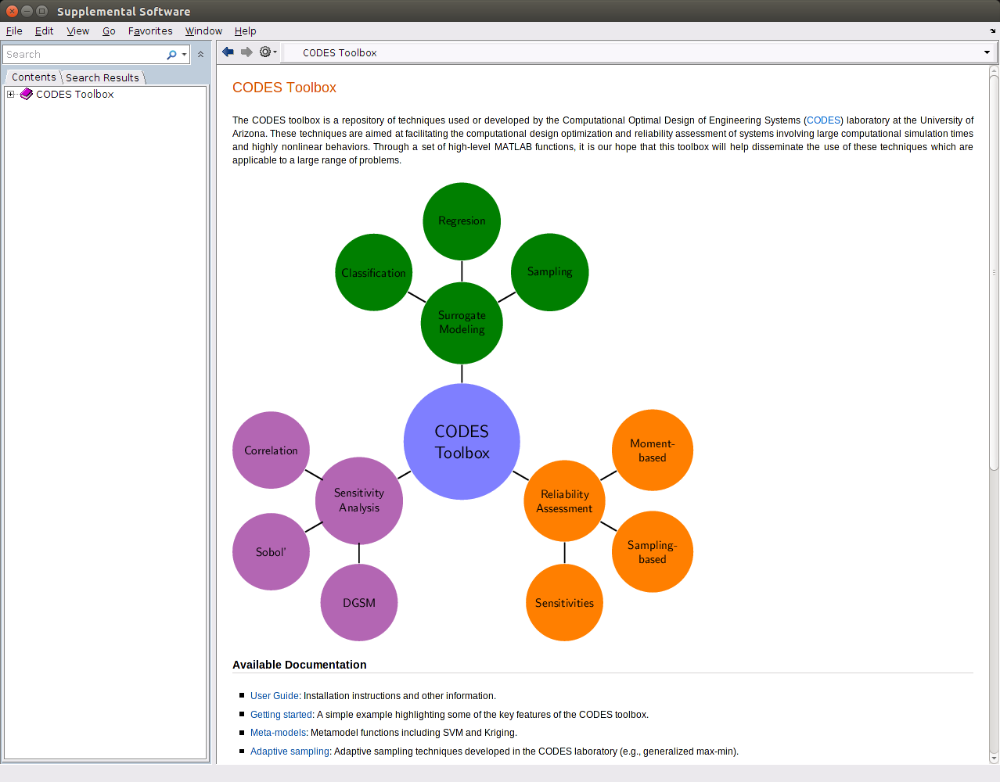
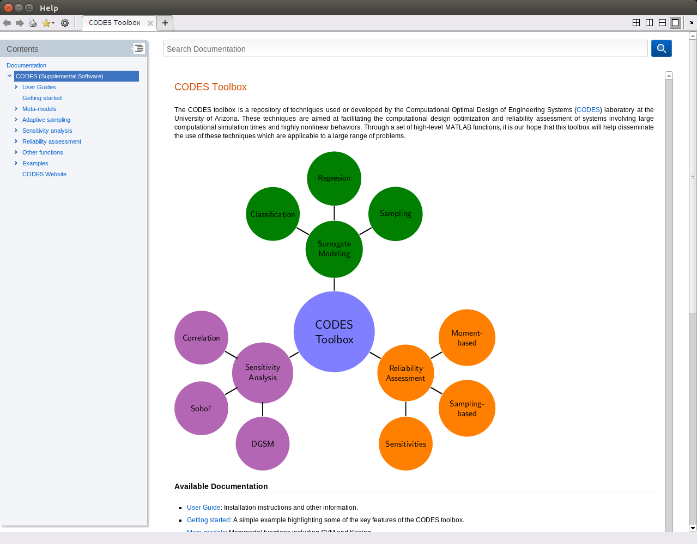

CODES Toolbox / User Guide / General Information
Contents
Package folder
The CODES toolbox is an object oriented toolbox that was built using the MATLAB package feature. A complete description of the MATLAB package feature can be found at:
In short, all classes and functions from this toolbox are stored into their respective namespaces.
Namespaces
There are four primary namespaces in the CODES toolbox:
- +common gathers a set of common or basic routines. They do not present any scientific information but allow for a much greater ease of use.
- +demo gathers a set of demonstrations and examples of the different elements of the CODES toolbox. These demonstrations provide starting material spanning all possible parameters of the elements of the CODES toolbox.
- +fit gathers the meta-models that can be used with the CODES toolbox.
- +method gathers a set of methods that represent the scientific contribution of this toolbox.
Import namespaces
In order to avoid any form of conflict in name resolution, all CODES toolbox element are accessed through their namespace. For example, to train an SVM one uses
CODES.fit.svm
However, if one is assured that there will not be any conflict, namespaces can be imported. Therefore, equivallentally to above:
import CODES.fit.*
svm
will import the content from CODES.fit so that svm can be accessed immediately. To clear the imported namespace, use:
clear importConventions
A sample of n realization of random vector of size dim should be a matrix of size (n x dim). For example, 10 realizations of a standard bivariate gaussian would be:
x=normrnd(0,1,10,2); disp(x)
1.0389 1.9163
0.9218 -1.3853
-0.2325 0.0286
1.5533 0.6182
-0.1601 -0.3587
1.8665 1.8026
0.9608 0.3743
0.0018 -0.3757
-0.5563 -0.1865
1.4872 0.5451
Some functions in this toolbox allow to pass gradient of a function f. When that happens, for a (n x dim) sample, f(x) is expected to return 2 output, y the (n x 1) function value array and dy, the (n x dim) gradient array. For example:
f=@(x)deal(2*x(:,1)+3*x(:,2).^3,[2*ones(size(x,1),1) 3*3*x(:,2).^2]);
[y,dy]=f([0 0;1 2;3 0.25]) %#ok<NOPTS>
y =
0
26.0000
6.0469
dy =
2.0000 0
2.0000 36.0000
2.0000 0.5625
Toolbox help
To open the help, use the command:
CODES.doc
Depending on the MATLAB version used, the CODES toolbox will appear in different ways:
MATLAB 2012a or older:

MATLAB 2012b to MATLAB 2014b:

MATLAB 2015a and newer:

Copyright © 2015 Computational Optimal Design of Engineering Systems (CODES) Laboratory. University of Arizona.
|
|
Computational Optimal Design of Engineering Systems |

|